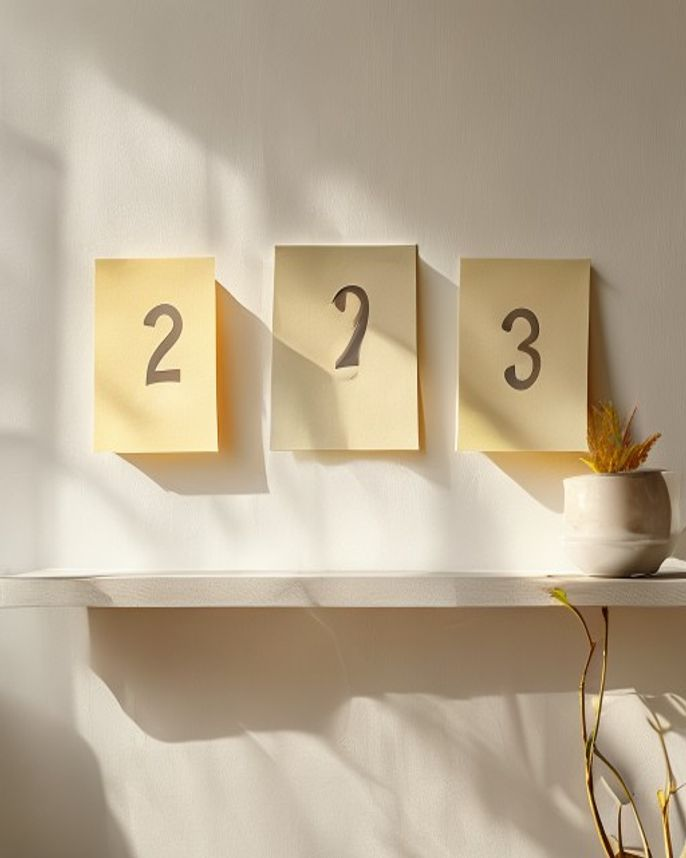
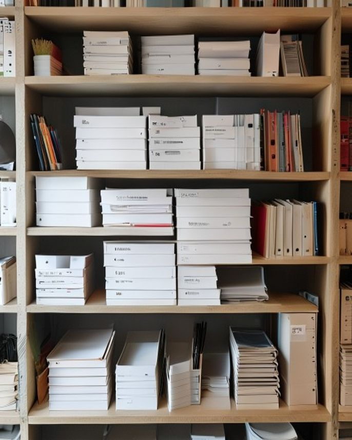

来源：2026-05-17-内容创业最贵的不是流量是有用.md ｜ 飞书：recvjQwoRCDXIl / recvjQwpDYfk6J / recvjQwqL57QYh
☕ 那杯咖啡，把我 92 天的努力全否了
🥲 昨天下午跟一位 500 万粉同行喝咖啡
他翻完我今年发的 87 篇文章
就一句话：你这是在写给你自己看
我当场不说话了
回家把 87 篇按一个新口径全过了一遍
能让读者立刻拿走点什么的
只有 2 到 3 篇
剩下 84 篇全在炫"我多努力"
没人会主动转给朋友
那杯咖啡可能是我今年喝过最贵的
也是最值的
92 天，我以为我在内容创业
其实大多数时候是在自我表达
差远了
#AI工具 #内容创业 #自媒体复盘 #创作认知 #顿悟时刻
种草型 · 待发布
⚖️ 自嗨型 vs 有用型，差的不是文笔是脑子
🆚 同样写 4 Agent，两种结果
【自嗨型】
凌晨1点的故事开头
我多努力 / 我省了几小时
读完很感动，然后呢
关掉公众号继续刷
【有用型】
打开 ChatGPT 复制这段提示词
粘到这里按这个键
今晚就能用上
差别不是文采
是有没有把读者当成主角
有用感 3 条标准
能立刻打开用
能立刻讲给别人听
能立刻解决一个具体麻烦
我盘了 87 篇
满足任意一条的只有 3 篇
剩下 84 篇我都在跟空气说话
#AI工具 #内容创业 #写作方法论 #自媒体 #自检清单
对比型 · 待发布
💡 3 个动作，让你下篇就从「自嗨」走到「有用」


🛠️ 今天起我自己在用的 3 件事
第 1 件 · 发文前自问
读者明天 9 点之前
能立刻拿这篇做点什么
答不上来就重写
第 2 件 · 题材换口径
不写我的工作流
写你今天就要的工具/模板/步骤
我接下来连续 10 篇只写这个
第 3 件 · 每周日打分
所有文章按"有用感"评 1-5 分
4 分以下进反面案例库
5 分拆成模板进 Skill 库
3 件事都不难
难的是承认前 92 天写错了方向
#AI工具 #内容创业 #自媒体SOP #写作技巧 #复盘清单
技巧型 · 待发布